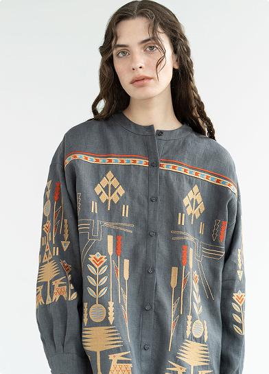
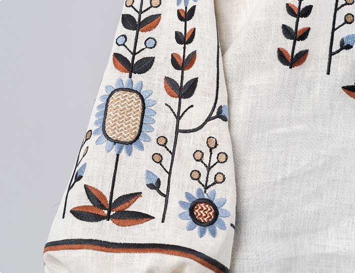
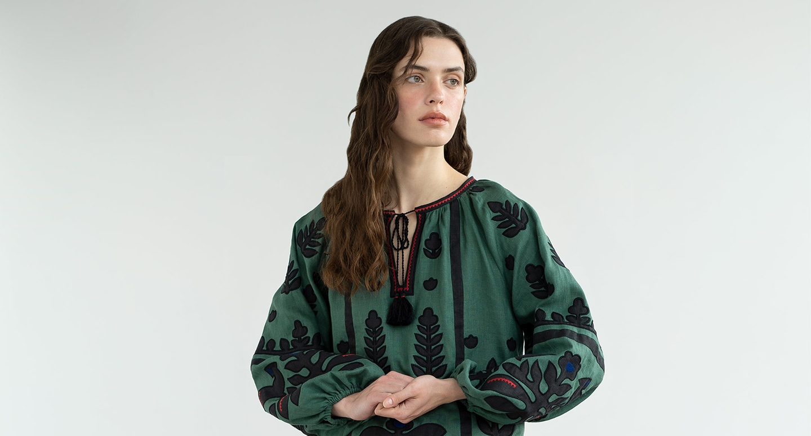
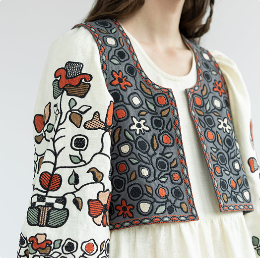

Reviving the traditional Ukrainian artistry in every stitch.
all embroidery is made by hand
About Us
- The store "Vyshyvanka Vibes" is a place where traditional Ukrainian vyshyvanka comes to life with new zest and style. Our store offers a wide selection of high-quality and authentic embroidery, which combines the elegance of traditional needlework and modern design.
- In "Vyshyvanka Vibes" you will find various models of embroidery, from classic to modern, corresponding to the latest fashion trends. Our embroidery is made using natural fabrics and is embroidered by highly qualified craftsmen who convey the beauty of Ukrainian culture in every detail.We believe that vyshyvanka is not just clothing, but a symbol of national pride, the heritage of our ancestors and a way of expressing one's individuality. Each embroidery from "Vyshyvanka Vibes" has its own unique history and symbolism, which gives it a special meaning.

-

AUGUST Poltava women's blouseRING
3300 UAH
-

Women's blouse Gorgany
3350 UAH
-

Women's blouse Crimea
4000 UAH
-

Men's shirt Verkhovina
3100 UAH
-

Mountain men's shirt
3300 UAH
-

Men's shirt Yasen
1700 UAH


Your order is our priority: Personalized approach and quality of service
Testimonials
-
Maria Tkachuk
I was pleasantly surprised by the variety of embroidery offered by Vyshyvanka Vibes. They have models for every taste - from classic to modern. I bought an embroidered dress to celebrate a special occasion and received impeccable service and refinement in every detail.
-
Sergey Rybachok
Vyshyvanka Vibes exceeds all my expectations! Their vyshyvanka are simply masterpieces! I fell in love with the quality of the materials and the skill of the artisans behind each product. This is my favorite embroidery shop where I always find something special and unique.
-
Natalia Chatuk
Vyshyvanka Vibes is a real find for everyone who appreciates Ukrainian culture. Their embroidery reflects the spirit and traditions of our people. I not only buy embroidered shirts for myself, but also give them to my friends abroad as a symbol of our beauty and national pride.